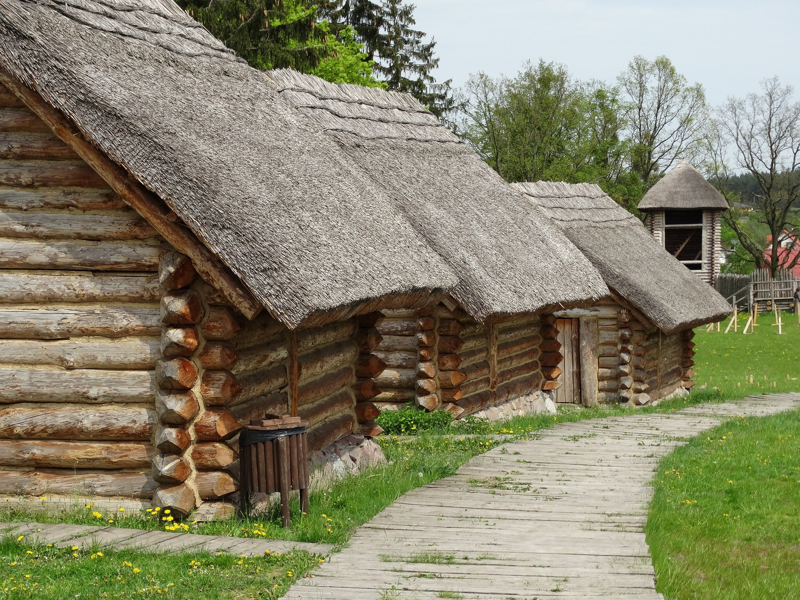
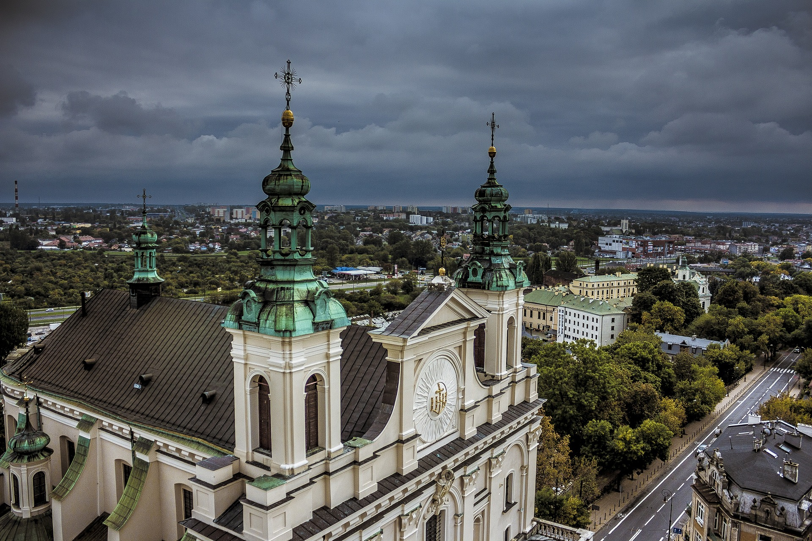
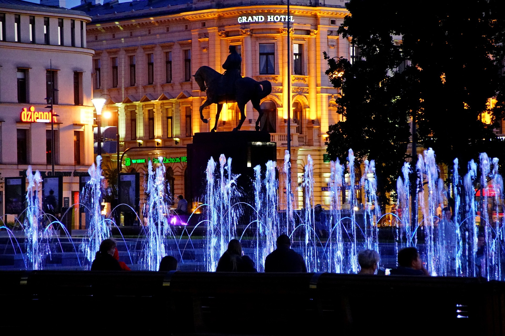
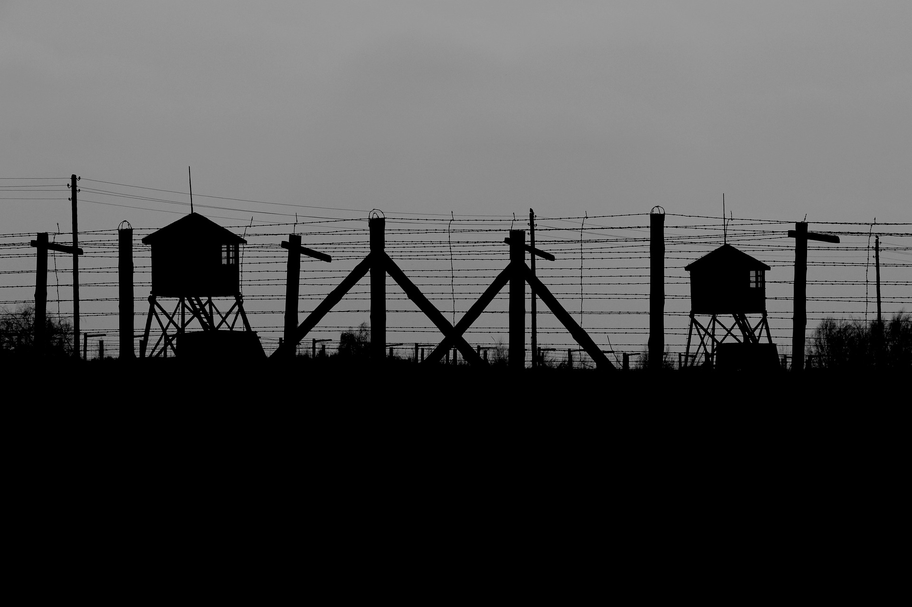
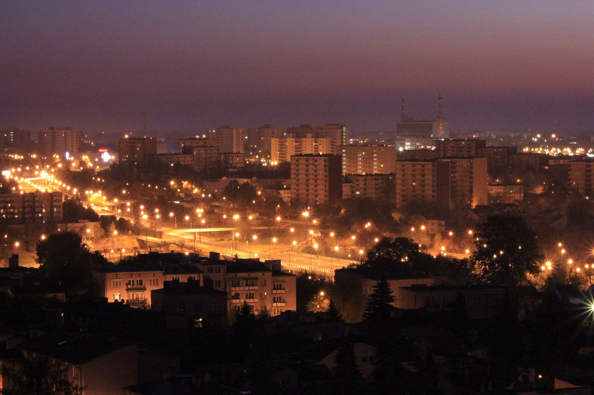
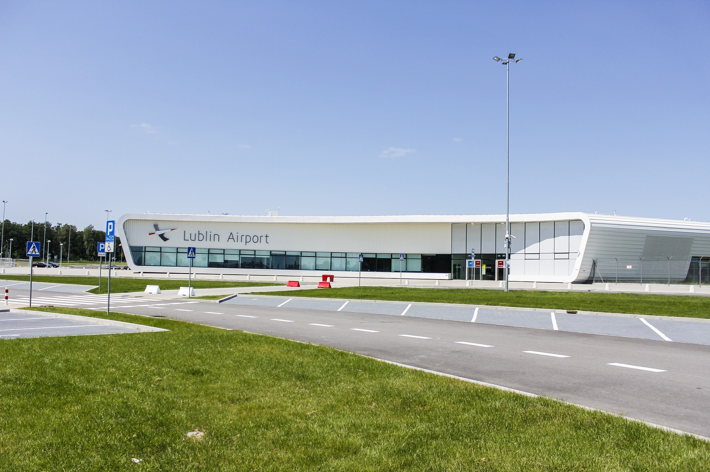

Historia Lublina
Okres przedlokacyjny
Początki ośrodka osadniczego sięgają VI w. Istniała wtedy osada na Czwartku, która rozprzestrzeniła się na sąsiednie wzgórza. W okresie wczesnopiastowskim wzniesiono kościół św. Mikołaja oraz drewnianą budowlę obronną na Wzgórzu Zamkowym. Budowla ta w XII wieku stała się ośrodkiem kasztelanii. Lublin należał wtedy do ziemi sandomierskiej, a szerzej - do Małopolski. Pierwsze wzmianki o Lublinie pochodzą z 1198. Miasto lokowano na prawie magdeburskim prawdopodobnie za czasów Bolesława Wstydliwego około 1257, jednak nie zachował się akt lokacyjny. W XIII w. Lublin stał się głównym ośrodkiem rodzącej się ziemi lubelskiej, od XIV w. wchodzącej w skład województwa sandomierskiego.
Rozkwit, ruina i odbudowa
Udokumentowanej lokacji 15 sierpnia 1317 dokonał Władysław Łokietek. W 1341 Kazimierz III Wielki odniósł w bitwie pod Lublinem zwycięstwo nad Tatarami. Rok później nadał miastu przywilej regulacyjny, na mocy którego otoczono je murami. 2 lutego 1386 na jednym z pierwszych sejmów walnych w Lublinie Jagiełło został wybrany królem Polski[20]. W 1392 Władysław Jagiełło nadał Lublinowi prawo składu, w związku z czym z biegiem lat miasto stało się ważnym ośrodkiem handlowym, istotnym dla wymiany towarów między Koroną Królestwa Polskiego a Wielkim Księstwem Litewskim[21]. W 1420 Biskup kijowski Andrzej przywiózł do Lublina relikwie Krzyża Świętego do kościoła dominikanów. W 1474 Kazimierz Jagiellończyk ustanowił tu stolicę nowo powstałego województwa lubelskiego.
Okres rozwoju
W 1815 Lublin znalazł się w Królestwie Kongresowym w zaborze rosyjskim. W 1837 został stolicą guberni. W 1873 liczba ludności miasta wynosiła 28,9 tys. W niecałe ćwierć wieku (do 1897) wzrosła do 50,2 tys. W 1877 zbudowano pierwsze połączenie kolejowe. Nastąpiły także widoczne przeobrażenia w stosunkach społecznych – powstała warstwa zamożnej burżuazji. Formował się kształt urbanistyczny miasta – rosły dysproporcje między bogatym śródmieściem a dzielnicami położonymi na peryferiach[28]. W czasie I wojny światowej w lecie 1915 zajęcie Lublina przez wojska niemieckie i austro-węgierskie zakończyło rosyjskie rządy w mieście.
II wojna światowa
W lipcu 1939 postanowiono, że w razie wybuchu wojny Lublin stanie się tymczasową siedzibą Prezydenta RP. Pierwszy atak lotniczy na miasto nastąpił 2 września rano. 5 września przeniesiono do miasta ministerstwa oraz skarb państwa. Tego samego dnia utworzona została Armia „Lublin”. 9 września Niemcy zbombardowali miasto. Zginęło około 1000 osób[32]. Prezydent Lublina Bolesław Liszkowski opuścił miasto 9 września 1939 i wyjechał do Rumunii. 18 września wojska niemieckie wkroczyły do Lublina. Do lipca 1944 miasto znalazło się pod okupacją jako część Generalnego Gubernatorstwa.
Polska Ludowa
W dobie Polski Ludowej nastąpił gwałtowny rozwój miasta. Do 1989 ludność miasta wzrosła ponad trzykrotnie w stosunku do 1939. W 1944 wznowił działalność Katolicki Uniwersytet Lubelski[35] oraz utworzono Uniwersytet Marii Curie-Skłodowskiej w Lublinie (UMCS). W 1953 powstała Politechnika Lubelska. Następnie z UMCS wyłoniły się: Uniwersytet Medyczny w Lublinie (1949) i Uniwersytet Przyrodniczy w Lublinie (1955). W 1944 w Lublinie została założona Spółdzielnia Wydawnicza „Czytelnik”. 19 sierpnia 1946 r. Lublin został odznaczony Orderem Krzyża Grunwaldu III klasy. 22 lipca 1954 roku w mieście odbyły się centralne obchody 10-lecia Polski Ludowej. Z tej okazji Lublin został odznaczony Krzyżem Grunwaldu I Klasy[37]. W 1957 powstała Lubelska Spółdzielnia Mieszkaniowa. W tym samym roku założono Lubelskie Towarzystwo Naukowe. W 1961 otwarto Kino „Kosmos”. W okresie Polski Ludowej wzniesiono również szereg wielkich zakładów przemysłowych, m.in. Fabrykę Samochodów Ciężarowych (FSC). 7 listopada 1968 roku odbyły się w Lublinie główne obchody 50-tej rocznicy odzyskania niepodległości w 1918 roku. Na uroczystej akademii przemówienie okolicznościowe wygłosił premier J. Cyrankiewicz. Od 8 do 24 lipca 1980 fala strajków i protestów pracowniczych objęła ponad 150 zakładów pracy na Lubelszczyźnie, z czego 91 w Lublinie. Strajki te są określane mianem Lubelskiego Lipca 1980. Ich uczestnicy domagali się: cofnięcia podwyżek cen żywności, podwyżek płac, poprawy warunków pracy oraz (w kilku przypadkach) niezależności działania związków zawodowych. Protesty zostały zakończone pisemnymi porozumieniami strajkujących z władzami. Otworzyły one drogę do lepiej przygotowanych i przeprowadzonych strajków sierpniowych na Wybrzeżu.
Po 1989
Dzisiejszy Lublin zajmuje obszar 147 km². Jest przeszło sześć razy większy niż w chwili uzyskania prawa miejskiego w 1317. Przydzielono mu wtedy „100 łanów ziemi uprawnej i nieuprawnej według miary magdeburskiej” (czyli około 24 km²). Lublin jest wiodącym ośrodkiem po prawej stronie Wisły, największym ośrodkiem akademickim po prawej stronie Wisły oraz jednym z największych w Polsce. Dzięki środkom Unii Europejskiej ma miejsce szereg inwestycji. Miasto jest członkiem Unii Metropolii Polskich.
